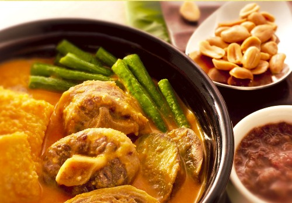

Kare-Kare
Ingredients:
- 1/2 kilo beef (round or sirloin cut) cut into cubes (for a more traditional kare kare, use cleaned beef tripe instead of beef)
- 1/2 kilo oxtail, cut 2 inch long
- 3 cups of peanut butter
- 1/4 cup grounded toasted rice
- 1/2 cup cooked bagoong alamang (anchovies)
- 2 pieces onions, diced
- 2 heads of garlic, minced
- 4 tablespoons atsuete oil
- 4 pieces eggplant, sliced 1 inch thick
- 1 bundle Pechay (Bok choy) cut into 2 pieces
- 1 bundle of sitaw (string beans) cut to 2" long
- 1 banana bud, cut similar to eggplant slices, blanch in boiling water
- 1/2 cup oil
- 8 cups of water
- Salt to taste
Cooking Procedure:
- In a stock pot, boil beef and oxtails in water for an hour or until cooked.
- Strain and keep the stock.
- Heat oil and atsuete oil in a big pan or wok.
- Saute garlic, onions until golden brown, then add the stock, toasted rice, beef, oxtail and peanut butter.
- Bring to a boil and simmer for 15 minutes. Salt to taste.
- Add the eggplant, string beans, pechay and banana bud. Cook the vegetables for a few minutes. Do not overcook the vegetables.
- You can have the option to serve with bagoong on the side and hot plain rice.